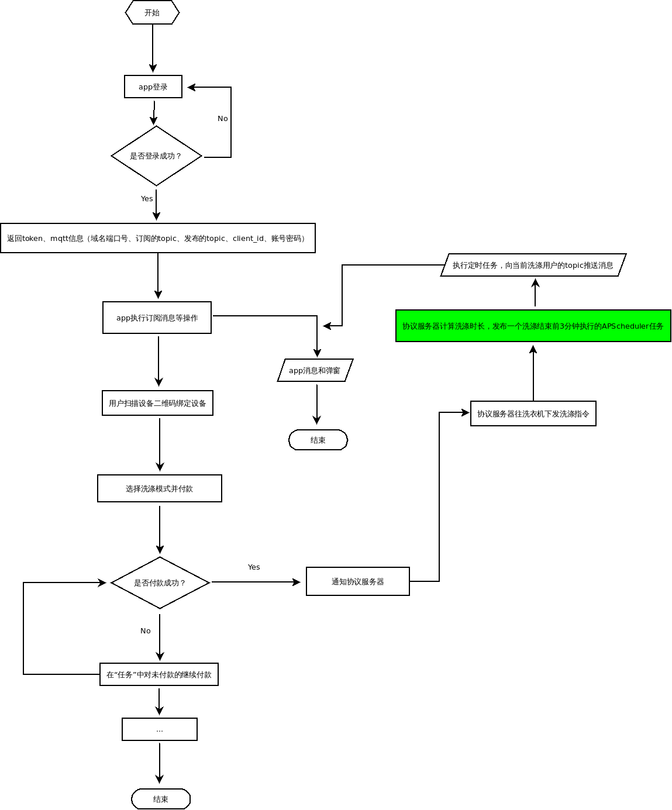

washer
项目规范
前端
python
django
其它
相关技术和版本
前端
PC端
移动设备端
后台
数据库
关系数据库
非关系数据库
缓存
其它
部署
源码目录结构
需求分析
任务计划功能
其它
进度规划与分工
进度规划：2015.08-25~
api
api(暂时不做)
app需要提供的jsapi
需要与android app端对接的
任务分工
数据库设计-mongodb
基本信息
集合结构
ebc_user(好友分组集合)
ebc_group(好友分组集合)
ebc_friends(好友集合)
ebc_task(任务清单集合)
ebc_share(分享记录集合)
ebc_challenge(挑战消息集合)
ebc_msg_status(任务清单状态集合)
ebc_user_position(用户位置集合)
ebc_device_position(设备位置集合)
流程图
消息推送
部署
域名
端口号
波特率
uwsgi配置文件
nginx配置
api文档
第三方帐号登录接口
输入参数
输出参数
更新token时间接口
输入参数
输出参数
上报用户位置接口
输入参数
输出参数
附近的商家接口
输入参数
输出参数
任务分享接口
输入参数
输出参数
测试
测试二维码
测试二维码2
测试二维码3
更新日志
washer
Docs
»
流程图
流程图
¶
消息推送
¶
